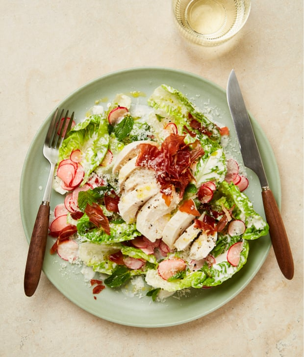

Bistro-style chicken salad with parmesan dressing and crisp prosciutto

This is one to set the table for on a weekend lunch. Poached chicken, crisp prosciutto, crunchy leaves and a creamy, cheesy dressing: it’s dinner for one, à la bistro, coming your way. Red-and-white checked tablecloth optional.
Heat the oven to 190C (170C fan)/375F/gas 5. Put the vinegar, sugar and a tiny pinch of salt in a small, shallow bowl, stir to dissolve the sugar, then add the radishes, mix to combine and leave to pickle gently, stirring every now and then, while you get on with the rest of the dish.
Lay out the prosciutto on a small oven tray lined with greaseproof paper, then bake for 15 minutes, until starting to crisp up. Remove, leave to cool and crisp up completely, then roughly crumble by hand.
Put the chicken and a teaspoon of salt in a small saucepan and pour over enough water just to submerge the chicken. Bring to a simmer, then cover the pan, turn the heat down low and cook, undisturbed, for seven minutes (or up to nine minutes if your chicken breast is on the larger side). Lift out the chicken on to a carving board (discard the poaching liquid and leave to rest for five to 10 minutes.
Meanwhile, very finely grate three-quarters of the parmesan into a medium bowl (I use a Microplane). Add the mayonnaise, lemon juice, mustard, garlic and a very generous grind of coarsely cracked pepper, and beat until smooth. Add the lettuce and a small pinch of salt, toss to coat, then transfer half the dressed lettuce to a shallow bowl and top with half the mint and half the pickled radishes (without their pickling liquor). Repeat with the remaining salad, mint and pickled radishes.
Cut the chicken breast into 1cm-thick slices, then sprinkle lightly with salt and a generous grind of coarsely cracked pepper. Use the side of your knife to pick up the whole breast and lay it on top of the salad, separating the slices slightly. Drizzle the top of the chicken with the oil, grate over the remaining parmesan and serve sprinkled with the crumbled prosciutto.